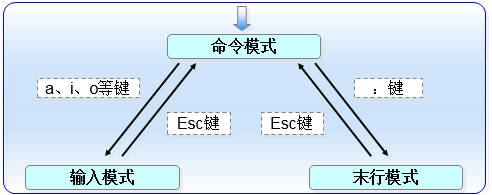
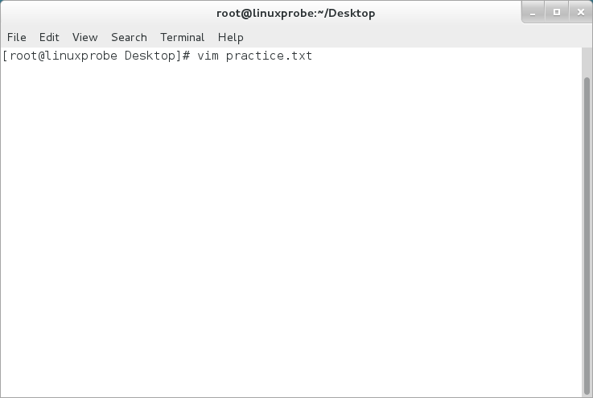
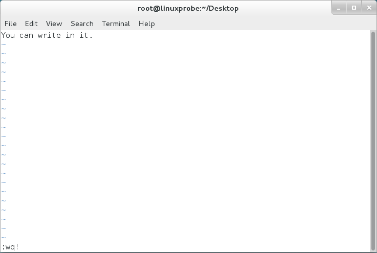
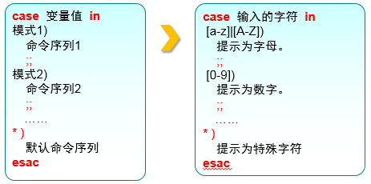

vim和shell命令脚本
本章首先讲解如何使用Vim编辑器来编写、修改文档，然后通过逐个配置主机名称、系统网卡以及Yum软件仓库参数文件等实验，帮助读者加深Vim编辑器中诸多命令、快捷键、模式切换方法的理解。然后把前面章节中讲解的Linux命令、命令语法与Shell脚本中的各种流程控制语句通过Vim编辑器写到Shell脚本中结合到一起，实现最终能够自动化工作的脚本文件。本章最后演示了怎样通过at命令与crond计划任务服务来分别实现一次性的系统任务设置和长期性的系统任务设置，从而让日常的工作更加高效，更自动化。
Vim文本编辑器
“在Linux系统中一切都是文件，而配置一个服务就是在修改其配置文件的参数”。而且在日常工作中大家也肯定免不了要编写文档，这些工作都是通过文本编辑器来完成的。
Vim之所以能得到广大厂商与用户的认可，原因在于Vim编辑器中设置了三种模式—命令模式、末行模式和编辑模式，每种模式分别又支持多种不同的命令快捷键，这大大提高了工作效率，而且用户在习惯之后也会觉得相当顺手。要想高效率地操作文本，就必须先搞清这三种模式的操作区别以及模式之间的切换方法
命令模式：控制光标移动，可对文本进行复制、粘贴、删除和查找等工作。
输入模式：正常的文本录入。
末行模式：保存或退出文档，以及设置编辑环境。

在每次运行Vim编辑器时，默认进入命令模式，此时需要先切换到输入模式后再进行文档编写工作，而每次在编写完文档后需要先返回命令模式，然后再进入末行模式，执行文档的保存或退出操作。在Vim中，无法直接从输入模式切换到末行模式。Vim编辑器中内置的命令有成百上千种用法，为了能够帮助读者更快地掌握Vim编辑器，
| 命令 | 作用 |
|---|---|
| dd | 删除（剪切）光标所在整行 |
| 5dd | 删除（剪切）从光标处开始的5行 往下删除5行 |
| yy | 复制光标所在整行 |
| 5yy | 复制从光标处开始的5行 |
| n | 显示搜索命令定位到的下一个字符串 |
| N | 显示搜索命令定位到的上一个字符串 |
| u | 撤销上一步的操作 那么回去呢? |
| p | 将之前删除（dd）或复制（yy）过的数据粘贴到光标后面 |
末行模式主要用于保存或退出文件，以及设置Vim编辑器的工作环境，还可以让用户执行外部的Linux命令或跳转到所编写文档的特定行数。要想切换到末行模式，在命令模式中输入一个冒号就可以了。
| 命令 | 作用 |
|---|---|
| :w | 保存 |
| :q | 退出 |
| :q! | 强制退出（放弃对文档的修改内容） |
| :wq! | 强制保存退出 |
| :set nu | 显示行号 |
| :set nonu | 不显示行号 |
| :命令 | 执行该命令 |
| :整数 | 跳转到该行 |
| :s/one/two | 将当前光标所在行的第一个one替换成two |
| :s/one/two/g | 将当前光标所在行的所有one替换成two |
| :%s/one/two/g | 将全文中的所有one替换成two |
| ?字符串 | 在文本中从下至上搜索该字符串 |
| /字符串 | 在文本中从上至下搜索该字符串 |
编写简单文档
编写脚本文档的第1步就是给文档取个名字，这里将其命名为practice.txt。如果存在该文档，则是打开它。如果不存在，则是创建一个临时的输入文件，如图所示。

打开practice.txt文档后，默认进入的是Vim编辑器的命令模式。此时只能执行该模式下的命令，而不能随意输入文本内容，我们需要切换到输入模式才可以编写文档。
在图4-1中提到，可以分别使用a、i、o三个键从命令模式切换到输入模式。其中，a键与i键分别是在光标后面一位和光标当前位置切换到输入模式，而o键则是在光标的下面再创建一个空行，此时可敲击a键进入到编辑器的输入模式.
进入输入模式后，可以随意输入文本内容，Vim编辑器不会把您输入的文本内容当作命令而执行
在编写完之后，想要保存并退出，必须先敲击键盘Esc键从输入模式返回命令模式，如图所示。然后再输入:wq!切换到末行模式才能完成保存退出操作

当在末行模式中输入:wq!命令时，就意味着强制保存并退出文档。然后便可以用cat命令查看保存后的文档内容了.
是不是很简单？！继续编辑这个文档。因为要在原有文本内容的下面追加内容，所以在命令模式中敲击o键进入输入模式更会高效.
因为此时已经修改了文本内容，所以Vim编辑器在我们尝试直接退出文档而不保存的时候就会拒绝我们的操作了。此时只能强制退出才可以结束本次输入操作，
大家在学完了理论知识之后又自己动手编写了一个文本，现在是否感觉成就满满呢？接下来将会由浅入深为读者安排三个小任务。为了彻底掌握Vim编辑器的使用，大家一定要逐个完成不许偷懒，如果在完成这三个任务期间忘记了相关命令，可返回前文进一步复习掌握。
配置主机名称
为了便于在局域网中查找某台特定的主机，或者对主机进行区分，除了要有IP地址外，还要为主机配置一个主机名，主机之间可以通过这个类似于域名的名称来相互访问。在Linux系统中，主机名大多保存在/etc/hostname文件中，接下来将/etc/hostname文件的内容修改为“linuxprobe.com”
第1步：使用Vim编辑器修改“
/etc/hostname”主机名称文件。第2步：把原始主机名称删除后追加“linuxprobe.com”。注意，使用Vim编辑器修改主机名称文件后，要在末行模式下执行:wq!命令才能保存并退出文档。
第3步：保存并退出文档，然后使用hostname命令检查是否修改成功。
配置网卡信息
网卡IP地址配置的是否正确是两台服务器是否可以相互通信的前提。在Linux系统中，一切都是文件，因此配置网络服务的工作其实就是在编辑网卡配置文件，因此这个小任务不仅可以帮助您练习使用Vim编辑器，而且也为您后面学习Linux中的各种服务配置打下了坚实的基础。当您认真学习完本书后，一定会特别有成就感，因为本书前面的基础部分非常扎实，而后面内容则具有几乎一致的网卡IP地址和运行环境，从而确保您全身心地投入到各类服务程序的学习上，而不用操心系统环境的问题。
现在有一个名称为ifcfg-eno16777736的网卡设备，我们将其配置为开机自启动，并且IP地址、子网、网关等信息由人工指定，其步骤应该如下所示。
第1步：首先切换到/etc/sysconfig/network-scripts目录中（存放着网卡的配置文件）。
第2步：使用Vim编辑器修改网卡文件ifcfg-eno16777736，逐项写入下面的配置参数并保存退出。由于每台设备的硬件及架构是不一样的，因此请读者使用ifconfig命令自行确认各自网卡的默认名称。
设备类型：TYPE=Ethernet
地址分配模式：BOOTPROTO=static
网卡名称：NAME=eno16777736
是否启动：ONBOOT=yes
IP地址：IPADDR=192.168.10.10
子网掩码：NETMASK=255.255.255.0
网关地址：GATEWAY=192.168.10.1
DNS地址：DNS1=192.168.10.1
第3步：重启网络服务并测试网络是否联通。
进入到网卡配置文件所在的目录，然后编辑网卡配置文件，在其中填入下面的信息：
1 | [root@linuxprobe ~] |
执行重启网卡设备的命令（在正常情况下不会有提示信息），然后通过ping命令测试网络能否联通。由于在Linux系统中ping命令不会自动终止，因此需要手动按下Ctrl-c键来强行结束进程。
1 | [root@linuxprobe network-scripts] |
配置Yum仓库
本书前面讲到，Yum软件仓库的作用是为了进一步简化RPM管理软件的难度以及自动分析所需软件包及其依赖关系的技术。可以把Yum想象成是一个硕大的软件仓库，里面保存有几乎所有常用的工具，而且只需要说出所需的软件包名称，系统就会自动为您搞定一切。
既然要使用Yum软件仓库，就要先把它搭建起来，然后将其配置规则确定好才行。鉴于第6章才会讲解Linux的存储结构和设备挂载操作，所以我们当前还是将重心放到Vim编辑器的学习上。如果遇到看不懂的参数也不要紧，后面章节会单独讲解。搭建并配置Yum软件仓库的大致步骤如下所示
编写Shell脚本
可以将Shell终端解释器当作人与计算机硬件之间的“翻译官”，它作为用户与Linux系统内部的通信媒介，除了能够支持各种变量与参数外，还提供了诸如循环、分支等高级编程语言才有的控制结构特性。要想正确使用Shell中的这些功能特性，准确下达命令尤为重要。Shell脚本命令的工作方式有两种：交互式和批处理。
交互式（Interactive）：用户每输入一条命令就立即执行。
批处理（Batch）：由用户事先编写好一个完整的Shell脚本，Shell会一次性执行脚本中诸多的命令。
在Shell脚本中不仅会用到前面学习过的很多Linux命令以及正则表达式、管道符、数据流重定向等语法规则，还需要把内部功能模块化后通过逻辑语句进行处理，最终形成日常所见的Shell脚本。
查看SHELL变量可以发现当前系统已经默认使用Bash作为命令行终端解释器了：
1 | $ echo $SHELL |
编写简单的脚本
估计读者在看完上文中有关Shell脚本的复杂描述后，会累觉不爱吧。但是，上文指的是一个高级Shell脚本的编写原则，其实使用Vim编辑器把Linux命令按照顺序依次写入到一个文件中，这就是一个简单的脚本了。
例如，如果想查看当前所在工作路径并列出当前目录下所有的文件及属性信息，实现这个功能的脚本应该类似于下面这样
1 | $ vim example.sh |
Shell脚本文件的名称可以任意，但为了避免被误以为是普通文件，建议将.sh后缀加上，以表示是一个脚本文件。在上面的这个example.sh脚本中实际上出现了三种不同的元素：
第一行的脚本声明（#!）用来告诉系统使用哪种Shell解释器来执行该脚本；
第二行的注释信息（#）是对脚本功能和某些命令的介绍信息，使得自己或他人在日后看到这个脚本内容时，可以快速知道该脚本的作用或一些警告信息；
第三、四行的可执行语句也就是我们平时执行的Linux命令了。什么？！你们不相信这么简单就编写出来了一个脚本程序，那我们来执行一下看看结果：
1 | $ bash example.sh |
除了上面用bash解释器命令直接运行Shell脚本文件外，第二种运行脚本程序的方法是通过输入完整路径的方式来执行。但默认会因为权限不足而提示报错信息，此时只需要为脚本文件增加执行权限即可（详见第5章）。初次学习Linux系统的读者不用心急，等下一章学完用户身份和权限后再来做这个实验也不迟：
1 | [root@linuxprobe ~]# ./example.sh |
接收用户的参数
但是，像上面这样的脚本程序只能执行一些预先定义好的功能，未免太过死板了。为了让Shell脚本程序更好地满足用户的一些实时需求，以便灵活完成工作，必须要让脚本程序能够像之前执行命令时那样，接收用户输入的参数。
其实，Linux系统中的Shell脚本语言早就考虑到了这些，已经内设了用于接收参数的变量，变量之间可以使用空格间隔。例如$0对应的是当前Shell脚本程序的名称，$#对应的是总共有几个参数，$*对应的是所有位置的参数值，$?对应的是显示上一次命令的执行返回值，而$1、$2、$3……则分别对应着第N个位置的参数值，如图4-15所示。
1 | [root@linuxprobe ~] |
判断用户的参数
学习是一个登堂入室、由浅入深的过程。在学习完Linux命令、掌握Shell脚本语法变量和接收用户输入的信息之后，就要踏上新的高度—能够进一步处理接收到的用户参数。
在本书前面章节中讲到，系统在执行mkdir命令时会判断用户输入的信息，即判断用户指定的文件夹名称是否已经存在，如果存在则提示报错；反之则自动创建。Shell脚本中的条件测试语法可以判断表达式是否成立，若条件成立则返回数字0，否则便返回其他随机数值。条件测试语法的执行格式如图4-16所示。切记，条件表达式两边均应有一个空格。

按照测试对象来划分，条件测试语句可以分为4种：
文件测试语句；
逻辑测试语句；
整数值比较语句；
字符串比较语句。
文件测试即使用指定条件来判断文件是否存在或权限是否满足等情况的运算符，具体的参数如表
| 操作符 | 作用 |
|---|---|
| -e | 测试文件是否存在 |
| -f | 判断是否为一般文件 |
| -d | 测试文件是否为目录类型 |
| -r | 测试当前用户是否有权限读取 |
| -w | 测试当前用户是否有权限写入 |
| -x | 测试当前用户是否有权限执行 |
下面使用文件测试语句来判断/etc/fstab是否为一个目录类型的文件，然后通过Shell解释器的内设$?变量显示上一条命令执行后的返回值。如果返回值为0，则目录存在；如果返回值为非零的值，则意味着目录不存在：(2步)
1 | [root@linuxprobe ~]# [ -d /etc/fstab ] |
再使用文件测试语句来判断/etc/fstab是否为一般文件，如果返回值为0，则代表文件存在，且为一般文件：
1 | [root@linuxprobe ~]# [ -f /etc/fstab ] |
逻辑语句用于对测试结果进行逻辑分析，根据测试结果可实现不同的效果。例如在Shell终端中逻辑“与”的运算符号是&&，它表示当前面的命令执行成功后才会执行它后面的命令，因此可以用来判断/dev/cdrom文件是否存在，若存在则输出Exist字样。
1 | [root@linuxprobe ~]# [ -e /dev/cdrom ] && echo "Exist" |
除了逻辑“与”外，还有逻辑“或”，它在Linux系统中的运算符号为||，表示当前面的命令执行失败后才会执行它后面的命令，因此可以用来结合系统环境变量USER来判断当前登录的用户是否为非管理员身份
1 | [root@linuxprobe ~] |
第三种逻辑语句是“非”，在Linux系统中的运算符号是一个叹号（！），它表示把条件测试中的判断结果取相反值。也就是说，如果原本测试的结果是正确的，则将其变成错误的；原本测试错误的结果则将其变成正确的。
我们现在切换回到root管理员身份，再判断当前用户是否为一个非管理员的用户。由于判断结果因为两次否定而变成正确，因此会正常地输出预设信息：
1 | [linuxprobe@linuxprobe ~]$ exit |
当前我们正在登录的即为管理员用户—root。下面这个示例的执行顺序是，先判断当前登录用户的USER变量名称是否等于root，然后用逻辑运算符“非”进行取反操作，效果就变成了判断当前登录的用户是否为非管理员用户了。最后若条件成立则会根据逻辑“与”运算符输出user字样；或条件不满足则会通过逻辑“或”运算符输出root字样，而如果前面的&&不成立才会执行后面的||符号。
1 | [root@linuxprobe ~]# [ $USER != root ] && echo "user" || echo "root" |
整数比较运算符仅是对数字的操作，不能将数字与字符串、文件等内容一起操作，而且不能想当然地使用日常生活中的等号、大于号、小于号等来判断。因为等号与赋值命令符冲突，大于号和小于号分别与输出重定向命令符和输入重定向命令符冲突。因此一定要使用规范的整数比较运算符来进行操作。可用的整数比较运算符如表
| 操作符 | 作用 |
|---|---|
| -eq | 是否等于 |
| -ne | 是否不等于 |
| -gt | 是否大于 |
| -lt | 是否小于 |
| -le | 是否等于或小于 |
| -ge | 是否大于或等于 |
接下来小试牛刀。我们先测试一下10是否大于10以及10是否等于10（通过输出的返回值内容来判断）：
1 | [root@linuxprobe ~]# [ 10 -gt 10 ] |
在2.4节曾经讲过free命令，它可以用来获取当前系统正在使用及可用的内存量信息。接下来先使用free -m命令查看内存使用量情况（单位为MB），然后通过grep Mem:命令过滤出剩余内存量的行，再用awk '{print $4}'命令只保留第四列，最后用FreeMem=\语句``的方式把语句内执行的结果赋值给变量。
这个演示确实有些难度，但看懂后会觉得很有意思，没准在运维工作中也会用得上。
1 | [root@linuxprobe ~] |
上面用于获取内存可用量的命令以及步骤可能有些“超纲”了，如果不能理解领会也不用担心，接下来才是重点。我们使用整数运算符来判断内存可用量的值是否小于1024，若小于则会提示“Insufficient Memory”（内存不足）的字样：
1 | [root@linuxprobe ~]# [ $FreeMem -lt 1024 ] && echo "Insufficient Memory" |
字符串比较语句用于判断测试字符串是否为空值，或两个字符串是否相同。它经常用来判断某个变量是否未被定义（即内容为空值），理解起来也比较简单。字符串比较中常见的运算符如表
| 操作符 | 作用 |
|---|---|
| = | 比较字符串内容是否相同 |
| != | 比较字符串内容是否不同 |
| -z | 判断字符串内容是否为空 |
接下来通过判断String变量是否为空值，进而判断是否定义了这个变量：
1 | [root@linuxprobe ~]# [ -z $String ] |
再尝试引入逻辑运算符来试一下。当用于保存当前语系的环境变量值LANG不是英语（en.US）时，则会满足逻辑测试条件并输出“Not en.US”（非英语）的字样
1 | [root@linuxprobe ~] |
流程控制语句
尽管此时可以通过使用Linux命令、管道符、重定向以及条件测试语句来编写最基本的Shell脚本，但是这种脚本并不适用于生产环境。原因是它不能根据真实的工作需求来调整具体的执行命令，也不能根据某些条件实现自动循环执行。例如，我们需要批量创建1000位用户，首先要判断这些用户是否已经存在；若不存在，则通过循环语句让脚本自动且依次创建他们。
接下来我们通过if、for、while、case这4种流程控制语句来学习编写难度更大、功能更强的Shell脚本。为了保证下文的实用性和趣味性，做到寓教于乐，我会尽可能多地讲解各种不同功能的Shell脚本示例，而不是逮住一个脚本不放，在它原有内容的基础上修修补补。尽管这种修补式的示例教学也可以让读者明白理论知识，但是却无法开放思路，不利于日后的工作
if条件测试语句
if条件测试语句可以让脚本根据实际情况自动执行相应的命令。从技术角度来讲，if语句分为单分支结构、双分支结构、多分支结构；其复杂度随着灵活度一起逐级上升。
if条件语句的单分支结构由if、then、fi关键词组成，而且只在条件成立后才执行预设的命令，相当于口语的“如果……那么……”。单分支的if语句属于最简单的一种条件判断结构，语法格式如图
下面使用单分支的if条件语句来判断/media/cdrom文件是否存在，若存在就结束条件判断和整个Shell脚本，反之则去创建这个目录：
1 | [root@linuxprobe ~] |
由于第5章才讲解用户身份与权限，因此这里继续用“bash 脚本名称”的方式来执行脚本。在正常情况下，顺利执行完脚本文件后没有任何输出信息，但是可以使用ls命令验证/media/cdrom目录是否已经成功创建：
1 | [root@linuxprobe ~] |
if条件语句的双分支结构由if、then、else、fi关键词组成，它进行一次条件匹配判断，如果与条件匹配，则去执行相应的预设命令；反之则去执行不匹配时的预设命令，相当于口语的“如果……那么……或者……那么……”。if条件语句的双分支结构也是一种很简单的判断结构，语法格式如图
下面使用双分支的if条件语句来验证某台主机是否在线，然后根据返回值的结果，要么显示主机在线信息，要么显示主机不在线信息。这里的脚本主要使用ping命令来测试与对方主机的网络联通性，而Linux系统中的ping命令不像Windows一样尝试4次就结束，因此为了避免用户等待时间过长，需要通过-c参数来规定尝试的次数，并使用-i参数定义每个数据包的发送间隔，以及使用-W参数定义等待超时时间。
1 | [root@linuxprobe ~] |
我们在4.2.3小节中用过$?变量，作用是显示上一次命令的执行返回值。若前面的那条语句成功执行，则$?变量会显示数字0，反之则显示一个非零的数字（可能为1，也可能为2，取决于系统版本）。因此可以使用整数比较运算符来判断$?变量是否为0，从而获知那条语句的最终判断情况。这里的服务器IP地址为192.168.10.10，我们来验证一下脚本的效果：
1 | [root@linuxprobe ~] |
if条件语句的多分支结构由if、then、else、elif、fi关键词组成，它进行多次条件匹配判断，这多次判断中的任何一项在匹配成功后都会执行相应的预设命令，相当于口语的“如果……那么……如果……那么……”。if条件语句的多分支结构是工作中最常使用的一种条件判断结构，尽管相对复杂但是更加灵活，语法格式如图
下面使用多分支的if条件语句来判断用户输入的分数在哪个成绩区间内，然后输出如Excellent、Pass、Fail等提示信息。在Linux系统中，read是用来读取用户输入信息的命令，能够把接收到的用户输入信息赋值给后面的指定变量，-p参数用于向用户显示一定的提示信息。在下面的脚本示例中，只有当用户输入的分数大于等于85分且小于等于100分，才输出Excellent字样；若分数不满足该条件（即匹配不成功），则继续判断分数是否大于等于70分且小于等于84分，如果是，则输出Pass字样；若两次都落空（即两次的匹配操作都失败了），则输出Fail字样：
1 | [root@linuxprobe ~] |
下面执行该脚本。当用户输入的分数分别为30和200时，其结果如下：
1 | [root@linuxprobe ~] |
为什么输入的分数为200时，依然显示Fail呢？原因很简单—没有成功匹配脚本中的两个条件判断语句，因此自动执行了最终的兜底策略。可见，这个脚本还不是很完美，建议读者自行完善这个脚本，使得用户在输入大于100或小于0的分数时，给予Error报错字样的提示。
for条件循环语句
for循环语句允许脚本一次性读取多个信息，然后逐一对信息进行操作处理，当要处理的数据有范围时，使用for循环语句再适合不过了。for循环语句的语法格式如图

下面使用for循环语句从列表文件中读取多个用户名，然后为其逐一创建用户账户并设置密码。首先创建用户名称的列表文件users.txt，每个用户名称单独一行。读者可以自行决定具体的用户名称和个数
1 | [root@linuxprobe ~] |
接下来编写Shell脚本Example.sh。在脚本中使用read命令读取用户输入的密码值，然后赋值给PASSWD变量，并通过-p参数向用户显示一段提示信息，告诉用户正在输入的内容即将作为账户密码。在执行该脚本后，会自动使用从列表文件users.txt中获取到所有的用户名称，然后逐一使用“id 用户名”命令查看用户的信息，并使用$?判断这条命令是否执行成功，也就是判断该用户是否已经存在。
需要多说一句，/dev/null是一个被称作Linux黑洞的文件，把输出信息重定向到这个文件等同于删除数据（类似于没有回收功能的垃圾箱），可以让用户的屏幕窗口保持简洁。
1 | [root@linuxprobe ~] |
执行批量创建用户的Shell脚本Example.sh，在输入为账户设定的密码后将由脚本自动检查并创建这些账户。由于已经将多余的信息通过输出重定向符转移到了/dev/null黑洞文件中，因此在正常情况下屏幕窗口除了“用户账户创建成功”（Create success）的提示后不会有其他内容。
在Linux系统中，/etc/passwd是用来保存用户账户信息的文件。如果想确认这个脚本是否成功创建了用户账户，可以打开这个文件，看其中是否有这些新创建的用户信息。
1 | [root@linuxprobe ~] |
您还记得在学习双分支if条件语句时，用到的那个测试主机是否在线的脚本么？既然我们现在已经掌握了for循环语句，不妨做些更酷的事情，比如尝试让脚本从文本中自动读取主机列表，然后自动逐个测试这些主机是否在线。
首先创建一个主机列表文件ipadds.txt：
1 | [root@linuxprobe ~] |
然后前面的双分支if条件语句与for循环语句相结合，让脚本从主机列表文件ipadds.txt中自动读取IP地址（用来表示主机）并将其赋值给HLIST变量，从而通过判断ping命令执行后的返回值来逐个测试主机是否在线。脚本中出现的$（命令）是一种完全类似于第3章的转义字符中反引号命令的Shell操作符，效果同样是执行括号或双引号括起来的字符串中的命令。大家在编写脚本时，多学习几种类似的新方法，可在工作中大显身手：
1 | [root@linuxprobe ~] |
while条件循环语句
while条件循环语句是一种让脚本根据某些条件来重复执行命令的语句，它的循环结构往往在执行前并不确定最终执行的次数，完全不同于for循环语句中有目标、有范围的使用场景。while循环语句通过判断条件测试的真假来决定是否继续执行命令，若条件为真就继续执行，为假就结束循环。while语句的语法格式如图4-21所示。
接下来结合使用多分支的if条件测试语句与while条件循环语句，编写一个用来猜测数值大小的脚本Guess.sh。该脚本使用$RANDOM变量来调取出一个随机的数值（范围为0～32767），将这个随机数对1000进行取余操作，并使用expr命令取得其结果，再用这个数值与用户通过read命令输入的数值进行比较判断。这个判断语句分为三种情况，分别是判断用户输入的数值是等于、大于还是小于使用expr命令取得的数值。当前，现在这些内容不是重点，我们当前要关注的是while条件循环语句中的条件测试始终为true，因此判断语句会无限执行下去，直到用户输入的数值等于expr命令取得的数值后，这两者相等之后才运行exit 0命令，终止脚本的执行。
1 | [root@linuxprobe ~] |
在这个Guess.sh脚本中，我们添加了一些交互式的信息，从而使得用户与系统的互动性得以增强。而且每当循环到let TIMES++命令时都会让TIMES变量内的数值加1，用来统计循环总计执行了多少次。这可以让用户得知总共猜测了多少次之后，才猜对价格。
1 | [root@linuxprobe ~] |
case条件测试语句
如果您之前学习过C语言，看到这一小节的标题肯定会会心一笑“这不就是switch语句嘛！”是的，case条件测试语句和switch语句的功能非常相似！case语句是在多个范围内匹配数据，若匹配成功则执行相关命令并结束整个条件测试；而如果数据不在所列出的范围内，则会去执行星号（*）中所定义的默认命令。case语句的语法结构如图

在前文介绍的Guess.sh脚本中有一个致命的弱点—只能接受数字！您可以尝试输入一个字母，会发现脚本立即就崩溃了。原因是字母无法与数字进行大小比较，例如，“a是否大于等于3”这样的命题是完全错误的。我们必须有一定的措施来判断用户的输入内容，当用户输入的内容不是数字时，脚本能予以提示，从而免于崩溃。
通过在脚本中组合使用case条件测试语句和通配符（详见第3章），完全可以满足这里的需求。接下来我们编写脚本Checkkeys.sh，提示用户输入一个字符并将其赋值给变量KEY，然后根据变量KEY的值向用户显示其值是字母、数字还是其他字符。
1 | [root@linuxprobe ~] |
计划任务服务程序
经验丰富的系统运维工程师可以使得Linux在无需人为介入的情况下，在指定的时间段自动启用或停止某些服务或命令，从而实现运维的自动化。尽管我们现在已经有了功能彪悍的脚本程序来执行一些批处理工作，但是，如果仍然需要在每天凌晨两点敲击键盘回车键来执行这个脚本程序，这简直太痛苦了（当然，也可以训练您的小猫在半夜按下回车键）。接下来，刘遄老师将向大家讲解如何设置服务器的计划任务服务，把周期性、规律性的工作交给系统自动完成。
计划任务分为一次性计划任务与长期性计划任务，大家可以按照如下方式理解。
一次性计划任务：今晚11点30分开启网站服务。
长期性计划任务：每周一的凌晨3点25分把/home/wwwroot目录打包备份为backup.tar.gz。
顾名思义，一次性计划任务只执行一次，一般用于满足临时的工作需求。我们可以用at命令实现这种功能，只需要写成“at 时间”的形式就可以。如果想要查看已设置好但还未执行的一次性计划任务，可以使用“at -l”命令；要想将其删除，可以用“atrm 任务序号”。在使用at命令来设置一次性计划任务时，默认采用的是交互式方法。例如，使用下述命令将系统设置为在今晚23:30分自动重启网站服务
1 | [root@linuxprobe ~] |
如果读者想挑战一下难度更大但简捷性更高的方式，可以把前面学习的管道符（任意门）放到两条命令之间，让at命令接收前面echo命令的输出信息，以达到通过非交互式的方式创建计划一次性任务的目的。
1 | [root@linuxprobe ~] |
如果我们不小心设置了两个一次性计划任务，可以使用下面的命令轻松删除其中一个：
1 | [root@linuxprobe ~] |
如果我们希望Linux系统能够周期性地、有规律地执行某些具体的任务，那么Linux系统中默认启用的crond服务简直再适合不过了。创建、编辑计划任务的命令为“crontab -e”，查看当前计划任务的命令为“crontab -l”，删除某条计划任务的命令为“crontab -r”。另外，如果您是以管理员的身份登录的系统，还可以在crontab命令中加上-u参数来编辑他人的计划任务。
在正式部署计划任务前，请先跟刘遄老师念一下口诀“分、时、日、月、星期 命令”。这是使用crond服务设置任务的参数格式（其格式见表4-6）。需要注意的是，如果有些字段没有设置，则需要使用星号（*）占位，如图

| 字段 | 说明 |
|---|---|
| 分钟 | 取值为0～59的整数 |
| 小时 | 取值为0～23的任意整数 |
| 日期 | 取值为1～31的任意整数 |
| 月份 | 取值为1～12的任意整数 |
| 星期 | 取值为0～7的任意整数，其中0与7均为星期日 |
| 命令 | 要执行的命令或程序脚本 |
假设在每周一、三、五的凌晨3点25分，都需要使用tar命令把某个网站的数据目录进行打包处理，使其作为一个备份文件。我们可以使用crontab -e命令来创建计划任务。为自己创建计划任务无需使用-u参数，具体的实现效果的参数如crontab -l命令结果所示：
1 | [root@linuxprobe ~] |
需要说明的是，除了用逗号（,）来分别表示多个时间段，例如“8,9,12”表示8月、9月和12月。还可以用减号（-）来表示一段连续的时间周期（例如字段“日”的取值为“12-15”，则表示每月的12～15日）。以及用除号（/）表示执行任务的间隔时间（例如“*/2”表示每隔2分钟执行一次任务）。
如果在crond服务中需要同时包含多条计划任务的命令语句，应每行仅写一条。例如我们再添加一条计划任务，它的功能是每周一至周五的凌晨1点钟自动清空/tmp目录内的所有文件。尤其需要注意的是，在crond服务的计划任务参数中，所有命令一定要用绝对路径的方式来写，如果不知道绝对路径，请用whereis命令进行查询，rm命令路径为下面输出信息中加粗部分。
1 | [root@linuxprobe ~] |
在crond服务的配置参数中，可以像Shell脚本那样以#号开头写上注释信息，这样在日后回顾这段命令代码时可以快速了解其功能、需求以及编写人员等重要信息。
计划任务中的“分”字段必须有数值，绝对不能为空或是*号，而“日”和“星期”字段不能同时使用，否则就会发生冲突。
最后再啰嗦一句，想必读者也已经发现了，诸如crond在内的很多服务默认调用的是Vim编辑器，相信大家现在能进一步体会到在Linux系统中掌握Vim文本编辑器的好处了吧。所以请大家一定要在彻底掌握Vim编码器之后再学习下一章